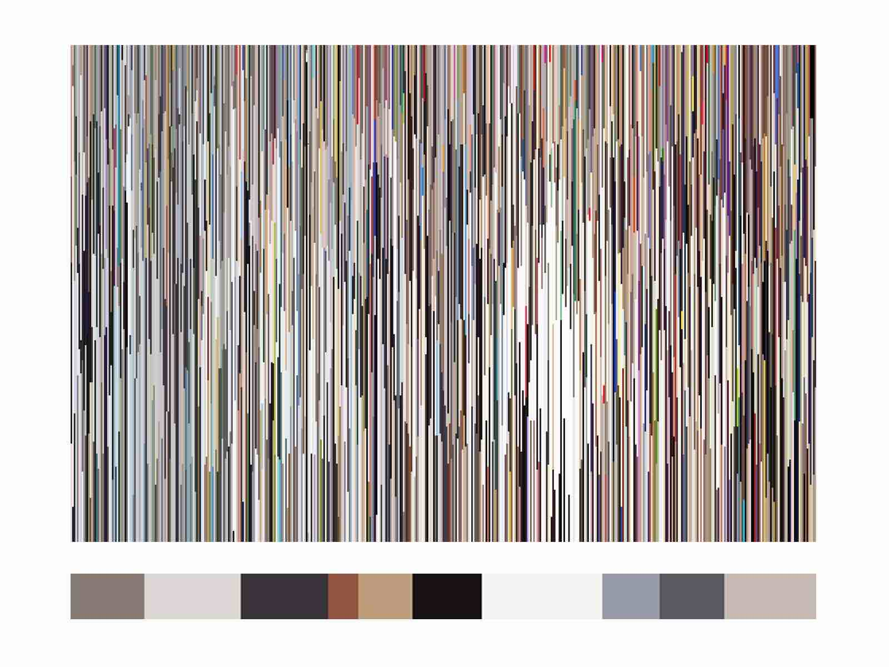
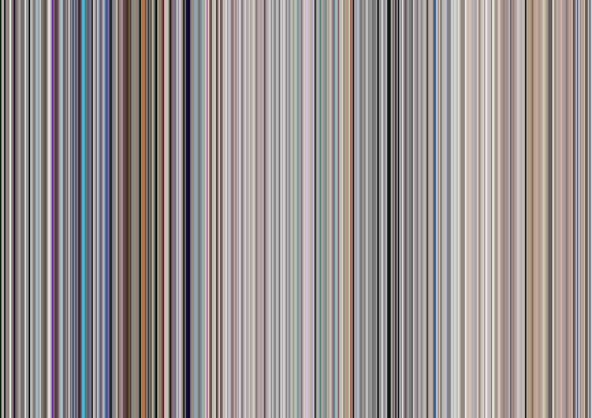
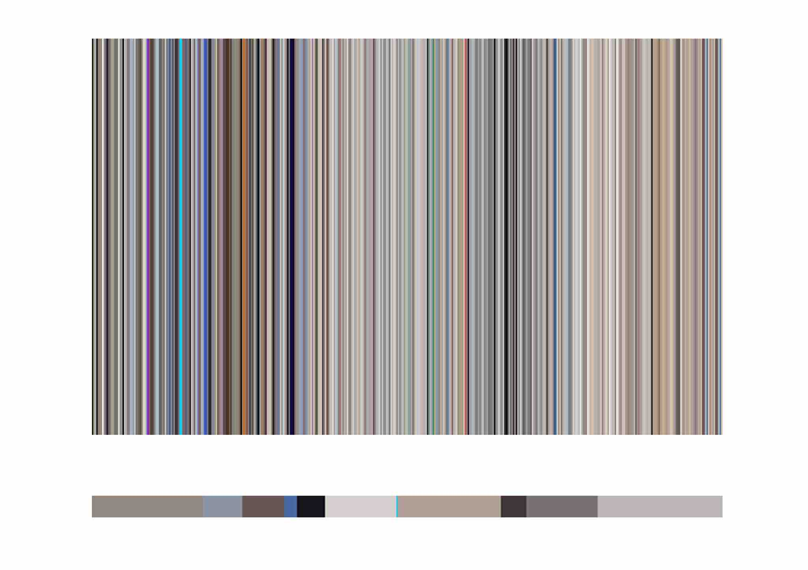

Coding
I have tried to analyze the color tone of all pictures on instagram. After analyzing, I found that the color tone of each person is unique. Somebody I asked them said it looks like him a lot. I found that many shades and one color gave no difference in the final step where I would show the overall shade. I think many shades make it look more dimensional. But a single shade can create beauty that is no different